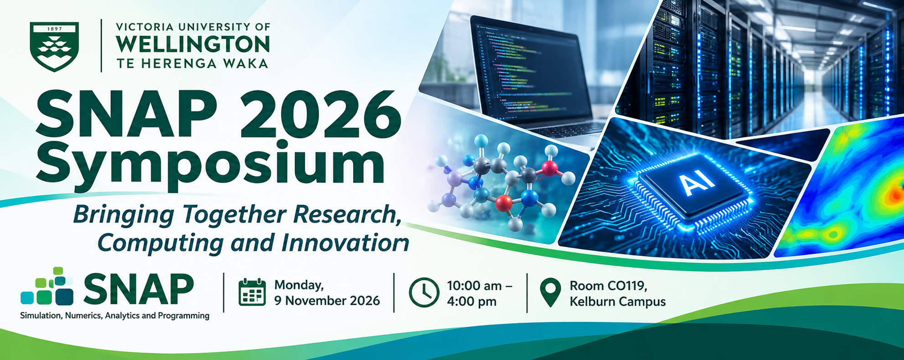
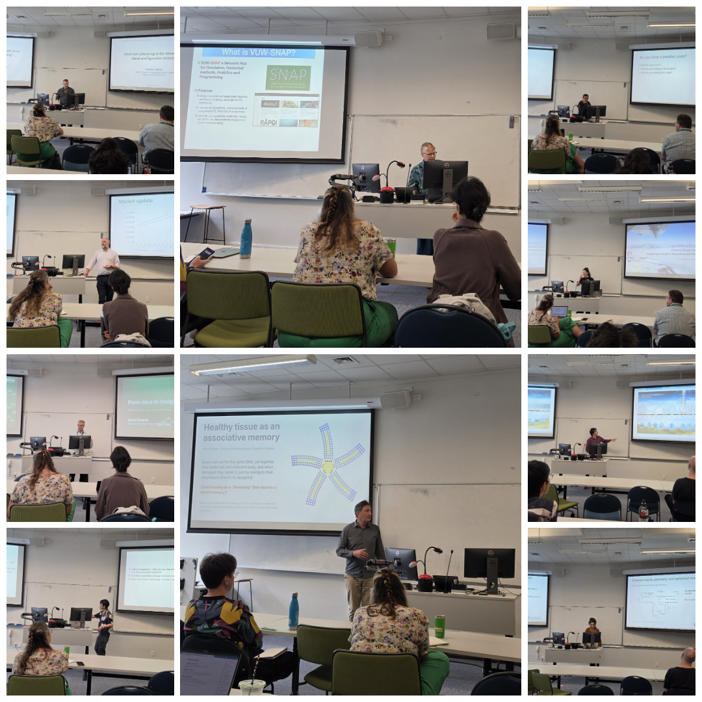
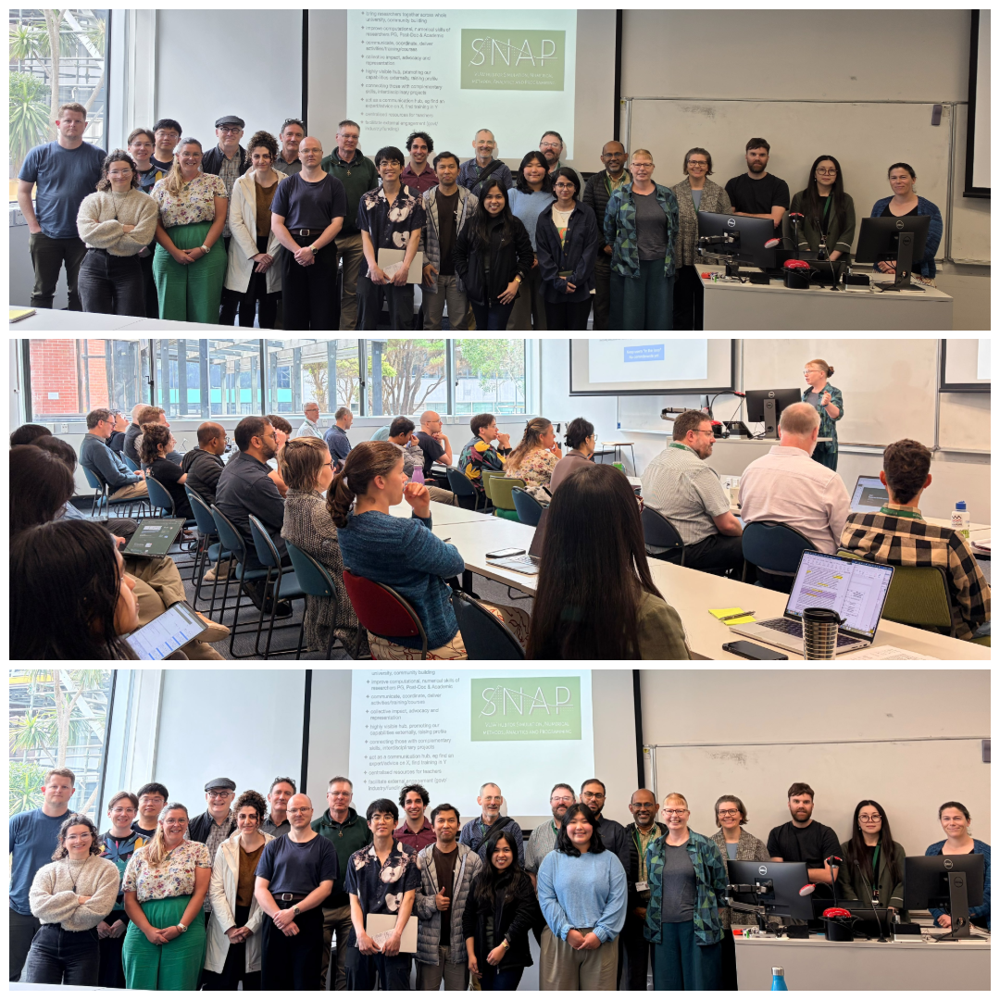

The Simulation, Numerics, Analytics and Programming (SNAP) community at Te Herenga Waka—Victoria University of Wellington successfully hosted the SNAP 2026 Symposium on Monday, 9 November 2026, bringing together researchers, academic staff, postgraduate students, and technical specialists from across the University.
Held in Room CO119 at the Kelburn campus, the full-day symposium provided an opportunity to share research, exchange ideas, discuss developments in research computing, and explore how emerging technologies—particularly Artificial Intelligence (AI)—are shaping research and academic workflows.
With contributions from a wide range of schools and research areas, the symposium highlighted the SNAP community’s interdisciplinary nature and the importance of shared computational resources in supporting research across the University.
Opening Session and HPC Updates
The symposium opened with welcome remarks and an introduction to SNAP by Patricia Hunt, who leads the SNAP community and chaired the morning session.
The opening session focused on updates about the University’s High Performance Computing (HPC) infrastructure, Rāpoi, and its relationship with REANNZ:
- Muhammad Ali Hashmi provided an overview of the Rāpoi HPC cluster, covering its hardware infrastructure, technical specifications, general usage practices, and statistics highlighting how the system has been used throughout 2026. The presentation also emphasised the importance of responsible HPC usage and good practices to ensure that shared computing resources remain accessible and efficient for everyone.
- Patricia Hunt discussed the recent independent review of Rāpoi, conducted by Greg Wills, and provided an update on REANNZ, including the transition towards a paid service model from 2027 and its potential implications for research computing.
- Ash McPherson from Digital Solutions followed with an overview of the increasing costs of HPC hardware, particularly in the context of growing demand from AI data centres. He also discussed engagement with REANNZ and progress on the business case for refreshing the University’s Rāpoi infrastructure.
AI, Productivity and Research Innovation
The symposium then turned to the growing role of AI in research and everyday academic work:
- David Roberts from Digital Solutions presented From Idea to Insight – Using Copilot in Your Research Project. He introduced the Microsoft Copilot Premium licence, explained its capabilities, and shared practical tips on using Copilot effectively to improve productivity and support research activities.
- Adam Crisp from the Research Office presented AI-Assisted App Build to Remove Repetitive Tasks. His presentation explored how AI-assisted application development can help automate repetitive processes and provide practical solutions to everyday research and administrative challenges.
These presentations generated strong interest in practical applications of AI, demonstrating how emerging tools can support more efficient research workflows.
Research Presentations Across Disciplines
One of the highlights of the symposium was the diverse range of research presentations from academics and researchers representing different schools and research centres across the University.
The programme featured presentations covering topics in psychology, computer science, linguistics, computational biology, Antarctic science, mathematics, and microfluidics:
- Angus Chapman (School of Psychological Sciences) – Reconstructing the Representational Geometry of Perception from Behaviour
- Brandon Loh (School of Engineering and Computer Science) – Keeping Score: Exploring the Strategy Space in Donation Games with Score-Based Reputation Systems
- Stephen Skalicky (School of Linguistics and Applied Language Studies) – What Can LLMs Bring to the Debate About Literal and Figurative Meaning?
- Marcus Frean (School of Engineering and Computer Science) – Healthy Tissue as an Associative Memory
- Alanna Alevropoulos-Borrill (Antarctic Research Centre) – From Ice Sheets to Global Climate: Understanding Change in Antarctica with Numerical Models
- Viktor Ixion Mészáros (School of Mathematics and Statistics) – Can We Spot Stressed Vegetation from Space? A Showcase of Python Software for Estimating Vegetation Properties from Remote Sensing Data
- Zeinab Rahnama (School of Mathematics and Statistics) – Three-Dimensional Flow and Particle Motion in a Channel–Cavity Microfluidic Device
These talks showcased the breadth of research being undertaken across the University and demonstrated how computational methods, numerical modelling, data analysis, and emerging technologies contribute to solving complex research problems.

Good Practices for Using HPC
Another particularly relevant presentation was delivered by Tulasi Parashar from the School of Chemical and Physical Sciences, titled How Not to Use HPC.
The talk provided practical guidance for researchers and students on making effective use of shared HPC resources. It covered important considerations for optimising computational workloads, scaling jobs appropriately, and avoiding common practices that can negatively affect the performance and availability of shared computing systems.
Tulasi also introduced the concept of terminal multiplexers, highlighting useful tools and techniques that can help researchers manage long-running computational tasks more effectively. The presentation complemented the earlier Rāpoi updates and reinforced the importance of responsible HPC usage across the research community.
Networking and Discussions
The symposium included a shared lunch break in the Hub, providing attendees with an opportunity to connect, exchange ideas, and continue discussions beyond the formal presentations.
The informal networking session encouraged conversations between researchers from different disciplines, creating opportunities to share experiences, discuss computational challenges, and explore potential collaborations.
A Successful Day for the SNAP Community
The SNAP 2026 Symposium was a successful day of knowledge sharing, collaboration, and interdisciplinary engagement. The wide range of presentations demonstrated the diverse ways in which computational resources, programming, numerical methods, data analytics, and AI are used to support research across Te Herenga Waka—Victoria University of Wellington.
We would like to thank all the speakers and presenters for sharing their expertise and research, everyone who attended and contributed to the discussions, and the colleagues who helped organise the event. Special thanks to Yvette Perrott, Wanting Jiao, and Muhammad Ali Hashmi for their hard work and dedication in organising the symposium. We would also like to thank Patricia Hunt for her leadership of SNAP and for chairing the morning session, and to Yvette Perrott for chairing the afternoon session and helping to ensure the smooth running of the programme.
We look forward to continuing to bring the SNAP community together through future workshops, discussions, and events.

Presentation Slides
The symposium presentation slides are available below for those who would like to revisit the talks and explore the topics further. We thank the speakers for sharing their materials with the SNAP community:
- Patricia Hunt: HPC and REANNZ Updates
- Muhammad Ali Hashmi: Rāpoi HPC Updates
- David Roberts: From Idea to Insight – Using Copilot in Your Research Project
- Adam Crisp: AI-Assisted App Build to Remove Repetitive Tasks
- Tulasi Parashar: How Not to Use HPC